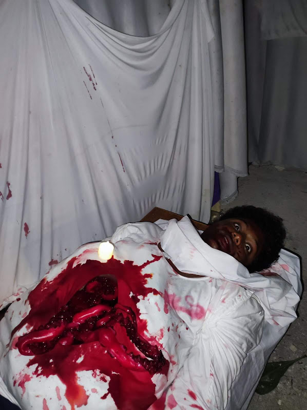

Yaanim was reportedly found dead infront of the biruveri hoholha, for 1 whole night. His entire body was busted open, with his guts fully displayed and seen to the outside world. Shockingly, Eyewitness accounts show that he came back alive sometimes too.
Yaanim was quoted to have said "the blood tastes like jam". No one knows how he was met with this condition, although recent investigation suggests Molhey Sir is yet again, in the line of potential suspects.